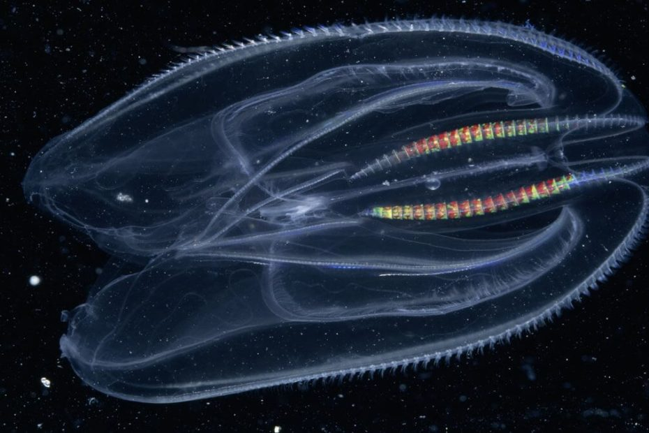

အမေရိကန် ပြည်ထောင်စုက သိပ္ပံ ပညာရှင် တွေဟာ ကမ္ဘာပေါ်မှာ မျိုးတုန်းပျောက်ကွယ် သွားခြင်း မရှိပဲ ယခုတိုင် အသက်ရှင်သန် နေသေးတဲ့ ရှေးအကျဆုံး သက်ရှိ သတ္တဝါ မျိုးစိတ်ကို ဖေါ်ထုတ် နိုင်ခဲ့ ကြပါတယ်။
သိပ္ပံ ပညာရှင် တွေရဲ့ အဆိုအရ Jelly fish နဲ့ ဆင်ဆင်တူတဲ့ သတ္တဝါဟာ ဒိုင်နိုဆောတွေ ထက်တောင် ပိုပြီး ရှေးကျသေးတယ်လို့ ဆိုပါတယ်။
သိပ္ပံ အမည်နဲ့ ctenophore အရပ်အခေါ် comb jelly လို့ အမည်ပေးထားတဲ့ ဒီ သတ္တဝါဟာ လွန်ခဲ့တဲ့ နှစ်သန်း ၇၀၀ ခန့်ကစလို့ ကမ္ဘာပေါ်မှာ ရှင်သန်ခဲ့တာ ဖြစ်ပါတယ်။ ဒီ နှစ်သန်း ၇၀၀ ခန့် အတွင်းမှာ ဘာမှ ထူးခြားတဲ့ ဆင့်ကဲ ပြောင်းလဲမှု မဖြစ်ခဲ့ပဲ မူလအတိုင်းပဲ ရှိနေ ခဲ့တယ်လို့လဲ ဆိုပါတယ်။
ဒီအချက်သာ မှန်ကန် ခဲ့မယ် ဆိုရင် ဒါဟာ ကမ္ဘာပေါ်မှာ ရှေးအကျဆုံး သက်ရှိ သတ္တဝါ ဖြစ်လာမှာ ဖြစ်ပါတယ်။ နှစ်သန်း ၇၀၀ ဆိုတာ ဒိုင်နိုဆောတွေ စတင် ရှင်သန်ခဲ့တဲ့ လွန်ခဲ့တဲ့ နှစ်သန်း ၂၃၀ ထက်တောင် အများကြီး စောနေပါ သေးတယ်။
နောက်ပြီး ဒီ ctenophore တွေဟာ ကမ္ဘာပေါ်မှာ ပထမဆုံး ပေါ်ပေါက်လာ ခဲ့တဲ့ တိရစ္ဆာန် တွေနဲ့လဲ အနီးစပ်ဆုံး အမျိုးတော်နေတယ်လို့ ဆိုပါတယ်။ ဒီ့ထက် ပိုထူးခြား တာကတော့ ဒီ အကောင်ကို ယခုတိုင် သမုဒ္ဒရာ အနှံ့အပြားနဲ့ ငါးပြတိုက် တွေမှာ တွေ့မြင်နေရဆဲ ဖြစ်နေတာပါပဲ။
ကမ္ဘာပေါ်က သတ္တဝါ တွေအထဲမှာ ဘယ် သတ္တဝါဟာ ကမ္ဘာ့ ပထမဆုံး သတ္တဝါ ဖြစ်မလဲ ဆိုတာကို ပညာရှင်တွေ ကြိုးစား ရှာဖွေ ခဲ့ကြတာ နှစ်ပေါင်များစွာ ကြာခဲ့ပါပြီ။ ဆယ်စုနှစ် အတော်ကြာ သုတေသနတွေ အပြီးမှာတော့ ဖြစ်နိုင်ခြေ ရှိတဲ့ သတ္တဝါ နှစ်မျိုးကို ရွေးထုတ် နိုင်ခဲ့ ကြပါတယ်။
သုတေသန တွေအရ ရေမြှုပ် (sponge) တွေနဲ့ အခု comb jelly တွေဟာ အစောဆုံး သတ္တဝါတွေ ဖြစ်နိုင်တယ်လို့ အများ လက်ခံ လာကြပါတယ်။ ဒါပေမယ့် ဒီ သတ္တဝါ နှစ်ကောင်မှာ ဘယ်မျိုးက ပိုစောလဲ ဆိုတာကိုတော့ ပညာရှင်တွေ သဘော တူညီမှု မရနိုင်ခဲ့ ကြပါဘူး။
ပင်လယ်ရေမြှုပ်တွေဟာ သူတို့ရဲ့ ဘဝ တလျောက်လုံးကို တစ်နေရာ ထဲမှာ ကျောက်ချနေပြီး သူတို့ရဲ့ ရေမြှုပ်ထဲ ဖြတ်သွားတဲ့ ရေထဲ ပါတဲ့ အစာတွေကို ဖမ်းယူ စားသုံး ကြတာဖြစ်ပါတယ်။ ဒါပေမယ့် comb jelly တွေကတော့ ပင်လယ် သမုဒ္ဒရာ ရေနက်ထဲ ကူးခတ်ရင်း အစာရှာဖွေ စားသောက် ကြပါတယ်။
အခု သုတေသကို အမေရိကန် ပြည်ထောင်စုက ထိပ်တန်း တက္ကသိုလ် တစ်ခုဖြစ်တဲ့ University of California, Berkeley က ပညာရှင်တွေက ပြုလုပ်ခဲ့တာ ဖြစ်ပါတယ်။
သူတို့ရဲ့ တွေ့ရှိချက် အရ comb jelly တွေဟာ ပင်လယ်ရေမြှုပ်တွေထက် ပိုစောတယ် ဆိုတာကို တွေ့ရှိ ခဲ့ကြပါတယ်။ ပင်လယ်ရေမြှုပ်တွေ ရှင်သန်ခဲ့တာ ယခုဆို နှစ်သန်း ၆၀၀ ကျော်ခဲ့ပြီး ဖြစ်ပါတယ်။
Ctenophores ခေါ် comb jelly တွေမှာ သူတို့ရဲ့ ကိုယ်ကနေ တွဲလောင်းကျနေတဲ့ လက်တံ ၈ ခု ပါရှိပါတယ်။ ဒီလက်တံတွေကို အသုံးပြုပဲ သမုဒ္ဒရာ ရေထဲ ကူးခတ်ရင်း အစာရှာဖွေ ကြတာ ဖြစ်ပါတယ်။
ဘာကလေ တက္ကသိုလ် ပညာရှင် တွေရဲ့ အဆိုအရတော့ ဒီ comb jelly တွေဟာ လက်ရှိ ကမ္ဘာပေါ်မှာ ရှင်သန်နေ ကြတဲ့ တိရစ္ဆာန်တွေ အားလုံး ဆင်းသက်လာ ခဲ့တဲ့ မူလ ဘိုးဘေး မျိုးရင်း ဖြစ်တယ်လို့ ဆိုပါတယ်။
Ref: Ctenophore: Scientists identify jellyfish-like animal as the oldest living creature on Earth | BBC
သက်ရှိထင်ရှား ရှိနေသေးတဲ့ ကမ္ဘာ့ရှေးအကျဆုံး သတ္တဝါ ရှာတွေ့

May 23, 2023
Other Posts
- နာဆာ အာကာသခရီးစဉ်များ SpaceX နှင့် Northrop Grumman ကိုတာဝန်ပေး
- နာဆာရဲ့အာကာသ ယာဉ်ပေါ်သုံး ဘောပင်
- တိရစ္ဆာန်တွေ အရောင် မြင်နိုင်သလား
- ဥက္ကာပျံကြောင့် လောင်မီးကျ ပျက်စီးသွားတဲ့ ရှေးဟောင်းမြို့
- ခူကောင်ကို Zombie အဖြစ် ပြောင်းပစ်တဲ့ ဗိုင်းရပ်စ်
- အလင်းထက် ၇ ဆ မြန်တဲ့အလျင်နဲ့ သွားနေဟန် ပေါ်တဲ့ ဓါတ်ငွေ့တန်းကြီး ရှာတွေ့
- စကြာဝဠာကြီးက ဘယ်အထဲမှာ ပြန့်ကားနေတာလဲ
- ကြောင်ပြုစုနည်း အခြေခံ
- အင်္ဂါစုံ ဒိုင်နိုဆောဥ ကျောက်ဖြစ်ရုပ်ကြွင်း ရှာတွေ့
- အာကာသယာဉ်မှူးတွေ ကမ္ဘာကို ဘယ်လို ပြန်ဆင်းလဲ